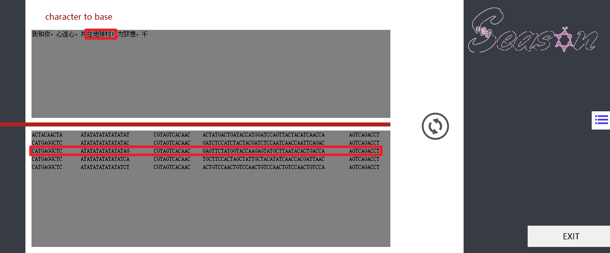

Materials & Methods
Materials
| Content | Volume/Weight |
|---|---|
| tris | 108 g |
| boric acid | 55 g |
| disodium Ethylenediamine | 7.44 g |
| water | add to 1000 ml |
| total | 1 L |
| Content | Volume/Weight |
|---|---|
| urea | 192 g |
| acrylamide | 77.3 g |
| bis-acrylamide | 2.7 g |
| 10 x TBE | 40 ml |
| water | add to 400 ml |
| total | 400 ml |
| Content | Volume/Weight |
|---|---|
| acrylamide | 116 g |
| bis-acrylamide | 4 g |
| water | add to 400 ml |
| total | 400 ml |
| Content | Volume/Weight |
|---|---|
| 8 M urea acrylamide solution (20%) | 20 ml |
| 8 M ureasolution | 20 ml |
| total | 40 ml |
| Content | Volume/Weight |
|---|---|
| acrylamide solution (30%) | 13.3 ml |
| 10 x TBE | 4 ml |
| water | 22.7 ml |
| total | 40 ml |
| Content | Sequence |
|---|---|
| Strand 1 | GAGTCCGTACCATCACATATTCACTATCAA CCTATCATTCATAAGTCACTCAGGCTGTACGGACTCGCGC |
| Strand 2 | GACAGAGTTGAGCCTGAGTGACTTATGAAT GATAGGTTGATAGTGAATATGTGATGCAACTCTGTCCGCG |
*【内容缺失】All DNA strands were synthesized and purified by Sangon Biotech.

Figure 6. 【图片缺失】
Methods
- ---DNA phosphorylation
- (a)---
- (b)---
- (c) ---
- ---DNA self connection
- System: 20uL
- P-ss DNA (40uM) 2.5uL
- 10× T4 buffer 2uL
- H2O 14.5uL
- T4 Dnl (5U/uL) 1uL
- Set the temperature of the PCR instrument to 95 ℃ for 3 minutes, cool to 65 ℃/S at 0.1 ℃/s, and cool to 37 ℃ at 0.1 ℃/s for 3min. After that, Add T4 ligase, and overnight at 37 ℃ after enzyme addition (10h).
- ---Restriction enzyme digestion
- Take 10ul of self connecting product and add:
- Exo1 0.3ul
- Exo3 0.5ul
- Exo1 buffer 0.5ul
- Exo3 buffer 0.5ul
- Reaction for 4 hours.
- ---Hybridization of dumbbell structure
- System: 10uL
- Self connecting product1 2uL
- Self connecting product2 2uL
- Mgcl2 (100mM) 1uL
- Hepes buffer (Ph7.5 100mM) 1uL
- H2O 4uL
- Hybridization time: 95 ℃ for 3 minutes, cooled to 37 ℃ at 0.1 ℃/s, overnight (10 hours).
- ---
- ---
- ---
- ---
- ---
- ---
- ---
- ---
1. Check the quality, quantity and formulation of the input DNA. Purity as measured using Nanodrop - OD 260/280 of 1.8 and OD 260/230 of 2.0-2.2; Input mass, as measured by Qubit - 1 µg.
2. Transfer 1-1.5 μg input DNA into a DNA LoBind tube and adjust the volume to 46 μl with nuclease-free water. Mix thoroughly by inversion and spin down briefly in a microfuge.
3. Transfer the 45 μl sample to a 1.5 ml DNA LoBind Eppendorf tube.Add 7 μl Ultra II End-prep reaction buffer; 3 μl Ultra II End-prep enzyme mix and 5 μl Nuclease-free water in the tube.
4. Transfer the sample to a 0.2 ml PCR tube, and incubate for 5 minutes at 20°C and 5 minutes at 65°C using the thermal cycler.
5. Transfer the sample to a 1.5 ml DNA LoBind Eppendorf tube.Add 60 µl of resuspended AMPure XP beads to the end-prep reaction and mix by pipetting. Incubate on a Hula mixer (rotator mixer) for 5 minutes at room temperature.
6. Prepare 500 μl of fresh 70% ethanol in nuclease-free water.
7. Spin down the sample and pellet on a magnet. Keep the tube on the magnet, and pipette off the supernatant.
8. Keep on magnet, wash beads with 200 µl of freshly prepared 70% ethanol without disturbing the pellet. Remove the 70% ethanol using a pipette and discard. Repeat.
9. Spin down and place the tube back on the magnet. Pipette off any residual ethanol. Allow to dry for ~30 seconds.
10. Remove the tube from the magnetic rack and resuspend pellet in 31 µl nuclease-free water. Incubate for 2 minutes at room temperature. Pellet beads on magnet until the eluate is clear and colourless.
11. Remove and retain 31 µl of eluate into a clean 1.5 ml Eppendorf DNA LoBind tube. Quantify 1 µl of end-prepped DNA using a Qubit fluorometer(nanodrop) - recovery aim > 700 ng.
12. Thaw and prepare Adapter Bead Binding Buffer (ABB) and Elution Buffer (ELB) at room temperature. Thaw and prepare Adapter Mix 1D (AMX1D) ; Running Buffer with Fuel Mix (RBF) and Blunt/TA Ligation Master Mix on ice. Check the contents of each tube are clear of any precipitate and are thoroughly mixed before setting up the reaction.
13. Taking the end-prepped DNA, perform adapter ligation by mixing 30 µl End-prepped DNA 20 µl Adapter Mix and 50 µl Blunt/TA Ligation Master Mix, mixing by flicking the tube between each sequential addition. Mix gently by flicking the tube, and spin down. Incubate the reaction for 10 minutes at room temperature.
14. Prepare the AMPure XP beads for use, resuspend by vortexing.
15. Add 40 µl of resuspended AMPure XP beads to the adapter ligation reaction from the previous step and mix by pipetting. Incubate on a Hula mixer (rotator mixer) for 5 minutes at room temperature. Place on magnetic rack, allow beads to pellet and pipette off supernatant.
16. Add 140 μl of Adapter Bead Binding Buffer (ABB) to the beads. Close the tube lid, and resuspend the beads by flicking the tube. Return the tube to the magnetic rack, allow beads to pellet and pipette off the supernatant. Repeat.
17. Remove the tube from the magnetic rack and resuspend pellet in 15 µl Elution Buffer. Incubate for 10 minutes at room temperature.Pellet beads on magnet until the eluate is clear and colourless.
18. Remove and retain 15 µl of eluate into a clean 1.5 ml Eppendorf DNA LoBind tube.
19. Quantify 1 µl of adapter ligated DNA using a Qubit fluorometer(nanodrop) - recovery aim ~430 ng.
20. Flip back the MinION lid and slide the priming port cover clockwise so that the priming port is visible.
21. After opening the priming port, check for small bubble under the cover. Draw back a small volume to remove any bubble.
22. Prepare the flow cell priming mix(576 µl RBF and 624 µl Nuclease-free water) in a clean 1.5 ml Eppendorf DNA LoBind tube.
23. Load 800 µl of the priming mix into the flow cell via the priming port, avoiding the introduction of air bubbles. Wait for 5 minutes.Thoroughly mix the contents of the RBF and LLB tubes by pipetting.
24. Mix 35.0 µl RBF;25.5 µl LLB; 2.5 µl Nuclease-free water and 12 µl DNA library to prepare the library for loading.
25. Gently lift the SpotON sample port cover to make the SpotON sample port accessible and load 200 µl of the priming mix into the flow cell via the priming port to complete the flow cell priming of air bubbles.
26. Mix the prepared library gently by pipetting up and down just prior to loading.
27. Add 75 μl of sample to the flow cell via the SpotON sample port in a dropwise fashion. Ensure each drop flows into the port before adding the next.
28. Gently replace the SpotON sample port cover, making sure the bung enters the SpotON port, close the priming port and replace the MinION lid.
29. Use MinKNOW to start sequencing and data analysis.
30. Close down MinKNOW and the Desktop Agent.
31. Prepare the flow cell for re-use.
*MinION is purchased from Oxford Nanopore Technologies.